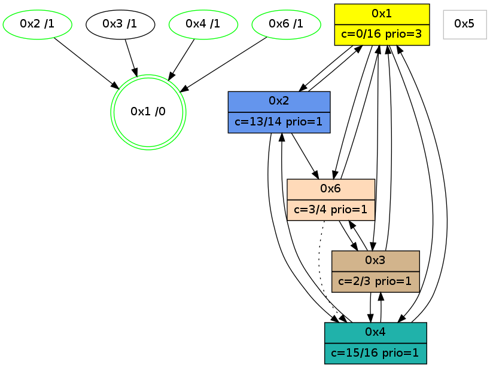

>> << IDX [start] -100 -25 -5 +0 +5 +25 +100 [1135.00138402]
 Previous packets
----------------------------------------------------------------------
1130.030050 beacon01(adaf) #0 coord=01,02,05,03,04,06 cycle=432.0ms assoc
-- color-indic=1 64 8d 1a
1130.040012 beacon02(adaf) #0 coord=01,02,05,03,04,06 cycle=432.0ms assoc 64 dc e5
1130.050010 beacon05(adaf) #0 coord=01,02,05,03,04,06 cycle=432.0ms assoc 64 7a cf
1130.060011 beacon03(adaf) #0 coord=01,02,05,03,04,06 cycle=432.0ms assoc 64 e6 eb
1130.070011 beacon04(adaf) #0 coord=01,02,05,03,04,06 cycle=432.0ms assoc 64 40 c1
1130.080012 beacon06(adaf) #0 coord=01,02,05,03,04,06 cycle=432.0ms assoc 64 34 dd
1130.092376 [Color(6) seq=300 @0:0 color=3/4 prio=1 c=0,2,d;7,c,e,f]
1130.095358 [Hello(1): seq=838 sym=2,4,6,3 sysInfo=hasWarning,coloring-mode-on,ColoringModeRequestCalled stat=2:3,2,13,0/4:11,13,14,3/6:3,0,2,0/3:1,0,2,0]
1130.098244 [Color(2) seq=322 @0:0 color=13/14 prio=1 c=0,2,3,7,c,e,f;1,4,6,8,9,b]
1130.100886 [Color(1) seq=364 @0:0 color=0 prio=3 c=c,d,f;2,3,7,e]
----------------------------------------------------------------------
1130.522157 beacon01(adaf) #0 coord=01,02,05,03,04,06 cycle=432.0ms assoc
-- color-indic=1 64 49 75
1130.532118 beacon02(adaf) #0 coord=01,02,05,03,04,06 cycle=432.0ms assoc 64 18 8a
1130.542118 beacon05(adaf) #0 coord=01,02,05,03,04,06 cycle=432.0ms assoc 64 be a0
1130.552118 beacon03(adaf) #0 coord=01,02,05,03,04,06 cycle=432.0ms assoc 64 22 84
1130.562119 beacon04(adaf) #0 coord=01,02,05,03,04,06 cycle=432.0ms assoc 64 84 ae
1130.572119 beacon06(adaf) #0 coord=01,02,05,03,04,06 cycle=432.0ms assoc 64 f0 b2
1130.583864 [Hello(2): seq=1424 sym=6,1 asym=4 sysInfo=hasWarning stat=6:0,0,0,0/1:7,4,1,0/4:12,3,3,1]
1130.587542 [Hello(6): seq=851 sym=2,1,3 asym=4 sysInfo=hasWarning stat=2:2,8,1,0/1:0,11,12,0/3:0,3,1,0/4:12,2,2,1]
1130.590060 [Hello(4): seq=938 sym=1,3 sysInfo=hasWarning stat=1:5,7,3,0/3:4,6,7,4]
1130.592959 [Color(4) seq=219 @0:0 color=15/16 prio=1 c=0,3,7,c;1,2,4,6,8,9,b,d,e]
----------------------------------------------------------------------
1131.014265 beacon01(adaf) #0 coord=01,02,05,03,04,06 cycle=432.0ms assoc
-- color-indic=1 64 05 c5
1131.024227 beacon02(adaf) #0 coord=01,02,05,03,04,06 cycle=432.0ms assoc 64 54 3a
1131.034225 beacon05(adaf) #0 coord=01,02,05,03,04,06 cycle=432.0ms assoc 64 f2 10
1131.044225 beacon03(adaf) #0 coord=01,02,05,03,04,06 cycle=432.0ms assoc 64 6e 34
1131.054225 beacon04(adaf) #0 coord=01,02,05,03,04,06 cycle=432.0ms assoc 64 c8 1e
1131.064227 beacon06(adaf) #0 coord=01,02,05,03,04,06 cycle=432.0ms assoc 64 bc 02
1131.076606 [Color(6) seq=301 @0:0 color=3/4 prio=1 c=0,2,d;7,c,e,f]
1131.080737 [Color(2) seq=323 @0:0 color=13/14 prio=1 c=0,2,3,7,c,e,f;1,4,6,8,9,b]
1131.083202 [Hello(1): seq=839 sym=2,4,6,3 sysInfo=hasWarning,coloring-mode-on,ColoringModeRequestCalled stat=2:4,2,13,0/4:12,14,14,3/6:4,0,2,0/3:1,0,2,0]
1131.086670 [STC(1) #0.200 new-neigh,tree-change,inconsistent-stability,stable,to-color d=0]
1131.088635 [Color(1) seq=365 @0:0 color=0 prio=3 c=c,d,f;2,3,7,e]
----------------------------------------------------------------------
1131.506372 beacon01(adaf) #0 coord=01,02,05,03,04,06 cycle=432.0ms assoc
-- color-indic=1 64 c1 aa
1131.516334 beacon02(adaf) #0 coord=01,02,05,03,04,06 cycle=432.0ms assoc 64 90 55
1131.526333 beacon05(adaf) #0 coord=01,02,05,03,04,06 cycle=432.0ms assoc 64 36 7f
1131.536334 beacon03(adaf) #0 coord=01,02,05,03,04,06 cycle=432.0ms assoc 64 aa 5b
1131.546334 beacon04(adaf) #0 coord=01,02,05,03,04,06 cycle=432.0ms assoc 64 0c 71
1131.556334 beacon06(adaf) #0 coord=01,02,05,03,04,06 cycle=432.0ms assoc 64 78 6d
1131.568290 [Hello(3): seq=937 sym=6,1,4 sysInfo=hasWarning stat=6:11,0,12,5/1:3,12,1,1/4:8,8,0,0]
1131.570427 [Hello(4): seq=939 sym=1,3 sysInfo=hasWarning stat=1:6,8,4,0/3:4,6,7,4]
1131.571993 [Hello(2): seq=1425 sym=6,1 asym=4 sysInfo=hasWarning stat=6:1,0,0,0/1:8,5,2,0/4:13,4,3,1]
1131.573791 [Hello(6): seq=852 sym=1,3 asym=4 sysInfo=hasWarning stat=1:1,12,13,0/3:0,3,1,0/4:13,3,2,1]
1131.575723 [STC(2)->1 #0.200 new-neigh,tree-change,inconsistent-stability,stable,to-color d=1]
1131.577645 [STC(6)->1 #0.200 new-neigh,tree-change,inconsistent-stability,stable,to-color d=1]
1131.580301 [STC(4)->1 #0.200 new-neigh,tree-change,inconsistent-stability,stable,to-color d=1]
1131.582567 [Color(4) seq=220 @0:0 color=15/16 prio=1 c=0,3,7,c;1,2,4,6,8,9,b,d,e]
----------------------------------------------------------------------
1131.998483 beacon01(adaf) #0 coord=01,02,05,03,04,06 cycle=432.0ms assoc
-- color-indic=1 64 9f cb
1132.008444 beacon02(adaf) #0 coord=01,02,05,03,04,06 cycle=432.0ms assoc 64 ce 34
1132.018446 beacon05(adaf) #0 coord=01,02,05,03,04,06 cycle=432.0ms assoc 64 68 1e
1132.028445 beacon03(adaf) #0 coord=01,02,05,03,04,06 cycle=432.0ms assoc 64 f4 3a
1132.038446 beacon04(adaf) #0 coord=01,02,05,03,04,06 cycle=432.0ms assoc 64 52 10
1132.048446 beacon06(adaf) #0 coord=01,02,05,03,04,06 cycle=432.0ms assoc 64 26 0c
1132.060041 [TreeStatus(4)-.->1 #0.200 new-neigh,tree-change,inconsistent-stability,stable child=1]
1132.061988 [Color(2) seq=324 @0:0 color=13/14 prio=1 c=0,2,3,7,c,e,f;1,4,6,8,9,b]
1132.063586 [Hello(1): seq=840 sym=2,4,6,3 sysInfo=hasWarning,coloring-mode-on,ColoringModeRequestCalled stat=2:5,2,14,0/4:13,15,15,3/6:5,0,3,0/3:1,0,2,0]
1132.066215 [Color(6) seq=302 @0:0 color=3/4 prio=1 c=0,2,d;7,c,e,f]
1132.069111 [Color(1) seq=366 @0:0 color=0 prio=3 c=c,d,f;2,3,7,e]
----------------------------------------------------------------------
1132.490591 beacon01(adaf) #0 coord=01,02,05,03,04,06 cycle=432.0ms assoc
-- color-indic=1 64 5b a4
1132.500551 beacon02(adaf) #0 coord=01,02,05,03,04,06 cycle=432.0ms assoc 64 0a 5b
1132.510551 beacon05(adaf) #0 coord=01,02,05,03,04,06 cycle=432.0ms assoc 64 ac 71
1132.520552 beacon03(adaf) #0 coord=01,02,05,03,04,06 cycle=432.0ms assoc 64 30 55
1132.530554 beacon04(adaf) #0 coord=01,02,05,03,04,06 cycle=432.0ms assoc 64 96 7f
1132.540553 beacon06(adaf) #0 coord=01,02,05,03,04,06 cycle=432.0ms assoc 64 e2 63
1132.552205 [Hello(3): seq=938 sym=6,1,4 sysInfo=hasWarning stat=6:11,1,12,5/1:4,13,1,1/4:8,8,0,1]
1132.555955 [Hello(2): seq=1426 sym=6,1 asym=4 sysInfo=hasWarning stat=6:1,1,1,0/1:9,6,2,0/4:13,4,4,2]
1132.558510 [Hello(4): seq=940 sym=2,1,3 sysInfo=hasWarning stat=2:0,1,0,0/1:7,9,4,0/3:4,6,7,4]
1132.561544 [Color(4) seq=221 @0:0 color=15/16 prio=1 c=0,3,7,c;1,2,4,6,8,9,b,d,e]
----------------------------------------------------------------------
1132.982699 beacon01(adaf) #0 coord=01,02,05,03,04,06 cycle=432.0ms assoc
-- color-indic=1 64 17 14
1132.992662 beacon02(adaf) #0 coord=01,02,05,03,04,06 cycle=432.0ms assoc 64 46 eb
1133.002660 beacon05(adaf) #0 coord=01,02,05,03,04,06 cycle=432.0ms assoc 64 e0 c1
1133.012661 beacon03(adaf) #0 coord=01,02,05,03,04,06 cycle=432.0ms assoc 64 7c e5
1133.022659 beacon04(adaf) #0 coord=01,02,05,03,04,06 cycle=432.0ms assoc 64 da cf
1133.032661 beacon06(adaf) #0 coord=01,02,05,03,04,06 cycle=432.0ms assoc 64 ae d3
1133.044653 PARSE ERROR************************
Traceback (most recent call last):
File "PacketAnalysis.py", line 167, in showOperaPacket
structPacket = OperaPacketParse.parsePacket(rawPacket)
File "../../pkg-python/HipSens/Core/OperaPacketParse.py", line 461, in parsePacket
return parseHelloMessage(data)
File "../../pkg-python/HipSens/Core/OperaPacketParse.py", line 109, in parseHelloMessage
sysInfo,stability,colorInfo = struct.unpack("!HBB", linkList[0:4])
error: unpack requires a string argument of length 4
48 20 01 00 03 49 00 02 02 08 02 00 04 00 06 00 03 00 53 04 00 86 00 00 4c 08 0e 26 4f 0e 03 05 02 02 53 16
1133.047487 [Color(1) seq=367 @0:0 color=0 prio=3 c=c,d,f;2,3,7,e]
1133.049160 [Color(2) seq=325 @0:0 color=13/14 prio=1 c=0,2,3,7,c,e,f;1,4,6,8,9,b]
1133.054077 [Color(6) seq=303 @0:0 color=3/4 prio=1 c=0,2,d;7,c,e,f]
----------------------------------------------------------------------
1133.474807 beacon01(adaf) #0 coord=01,02,05,03,04,06 cycle=432.0ms assoc
-- color-indic=1 64 d3 7b
1133.484768 beacon02(adaf) #0 coord=01,02,05,03,04,06 cycle=432.0ms assoc 64 82 84
1133.494768 beacon05(adaf) #0 coord=01,02,05,03,04,06 cycle=432.0ms assoc 64 24 ae
1133.504770 beacon03(adaf) #0 coord=01,02,05,03,04,06 cycle=432.0ms assoc 64 b8 8a
1133.514769 beacon04(adaf) #0 coord=01,02,05,03,04,06 cycle=432.0ms assoc 64 1e a0
1133.524769 beacon06(adaf) #0 coord=01,02,05,03,04,06 cycle=432.0ms assoc 64 6a bc
1133.536448 [Hello(3): seq=939 sym=6,1,4 sysInfo=hasWarning stat=6:12,2,12,5/1:5,14,1,1/4:9,9,0,1]
1133.540169 [Hello(2): seq=1427 sym=6,1,4 sysInfo=hasWarning stat=6:1,2,1,0/1:9,6,2,0/4:14,5,4,2]
1133.542728 [Hello(4): seq=941 sym=2,1,3 sysInfo=hasWarning stat=2:0,2,0,0/1:8,10,4,0/3:4,6,7,4]
1133.545762 [Color(4) seq=222 @0:0 color=15/16 prio=1 c=0,3,7,c;1,2,4,6,8,9,b,d,e]
1133.551454 [STC(1) #0.201 new-neigh,tree-change,inconsistent-stability,stable,to-color d=0]
----------------------------------------------------------------------
1133.966915 beacon01(adaf) #0 coord=01,02,05,03,04,06 cycle=432.0ms assoc
-- color-indic=1 64 9e 7c
1133.976875 beacon02(adaf) #0 coord=01,02,05,03,04,06 cycle=432.0ms assoc 64 cf 83
1133.986876 beacon05(adaf) #0 coord=01,02,05,03,04,06 cycle=432.0ms assoc 64 69 a9
1133.996877 beacon03(adaf) #0 coord=01,02,05,03,04,06 cycle=432.0ms assoc 64 f5 8d
1134.006876 beacon04(adaf) #0 coord=01,02,05,03,04,06 cycle=432.0ms assoc 64 53 a7
1134.016878 beacon06(adaf) #0 coord=01,02,05,03,04,06 cycle=432.0ms assoc 64 27 bb
1134.028473 [STC(4)->1 #0.201 new-neigh,tree-change,inconsistent-stability,stable,to-color d=1]
1134.030367 [STC(2)->1 #0.201 new-neigh,tree-change,inconsistent-stability,stable,to-color d=1]
1134.032957 [Color(2) seq=326 @0:0 color=13/14 prio=1 c=0,2,3,7,c,e,f;1,4,6,8,9,b]
1134.035267 [Hello(1): seq=842 sym=2,4,6,3 sysInfo=hasWarning,coloring-mode-on,ColoringModeRequestCalled stat=2:6,3,14,0/4:14,0,15,4/6:5,1,3,0/3:2,0,2,0]
1134.038420 [Color(1) seq=368 @0:0 color=0/16 prio=3 c=3,c,d,f;2,7,e]
1134.045454 [STC(6)->1 #0.201 new-neigh,tree-change,inconsistent-stability,stable,to-color d=1]
1134.047746 [Color(6) seq=304 @0:0 color=3/4 prio=1 c=0,2,d;7,c,e,f]
----------------------------------------------------------------------
1134.971422 beacon01(adaf) #0 coord=01,02,05,03,04,06 cycle=944.0ms assoc
-- color-indic=0 64 22 4b
1134.981383 beacon02(adaf) #0 coord=01,02,05,03,04,06 cycle=944.0ms assoc 64 73 b4
1134.991383 beacon05(adaf) #0 coord=01,02,05,03,04,06 cycle=944.0ms assoc 64 d5 9e